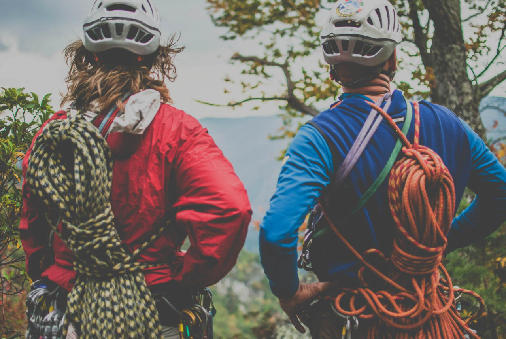

ORBEA MONEGROS
Btt en Sariñena
Aragón | Huesca
114 km en 4 h. 47 min. 42 s.
CURSA MUNTANYA MOSSOS
D'ESQUADRA SANT AMAND
Montaña en Ripoll
Catalunya | Girona
22.7 km en 2 h. 23 min. 12 s.
CURSA DE
CAU DE GUILLES
Montaña en Sant Julià de Vilatorta
Catalunya | Barcelona
23 km en 2 h. 18 min. 15 s.
CURSA DE ULTRA CAVALLS DEL VENT
Montaña en Bagà
Catalunya | Barcelona
100 km en 14 h. 33 min. 5 s.
CURSA ATLÈTICA DEL VOLTREGANÈS
Asfalto running en St Hipòlit de Voltregà-Les Masies de Voltregà
Catalunya | Barcelona
10 km en 35 min. 43 s.
CURSA SANT
GALDERIC-TAVERNOLES
Montaña en Tavèrnoles
Catalunya | Barcelona
10.5 km en 41 min. 31 s.
CÓRRER PER CÓRRER
Tierra en Manlleu
Catalunya | Barcelona
10 km en 33 min. 46 s.
CAMPIONAT INT. ATLETISME DEL RIPOLLÈS
Ripoll
Catalunya | Girona
21.1 km en 1 h. 14 min. 51 s.